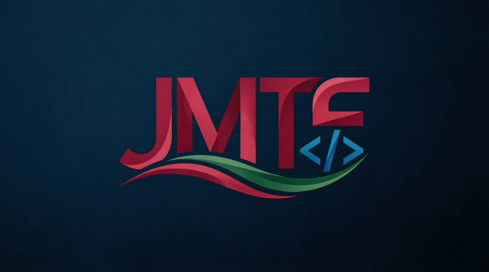
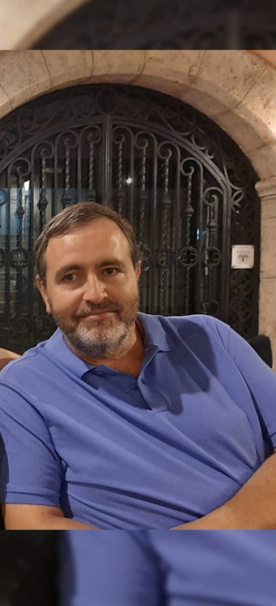

Trayectoria Informática
Soporte técnico y desarrollo de labores informáticas en empresas de primer nivel como Epson, HP y Lenovo.


"Dividir problemas, crear soluciones. 26 años de experiencia, ahora programando el futuro."
ContactarSoy estudiante de 1º de Desarrollo de Aplicaciones Multiplataforma (DAM) en el IES Simarro. Tras 26 años trabajando en el sector informático para empresas líderes como Epson, HP y Lenovo, he decidido dar un nuevo giro a mi carrera profesional.
Creo firmemente que programar es el arte de dividir los problemas en partes pequeñas para encontrar soluciones eficaces. Mi objetivo es aplicar esta lógica para desarrollar herramientas que ayuden a las personas a resolver sus desafíos diarios. Soy una persona con la mente abierta, con ganas de aprender y de adaptar mi amplia experiencia a las nuevas tecnologías.
Soporte técnico y desarrollo de labores informáticas en empresas de primer nivel como Epson, HP y Lenovo.
Cursos especializados en instalación de aire acondicionado y mantenimiento industrial, demostrando versatilidad y capacidad de aprendizaje continuo.
Jugador de baloncesto en mi etapa escolar y auxiliar de carreras en el Circuito de la Comunitat (Cheste), fomentando el trabajo en equipo y la organización.